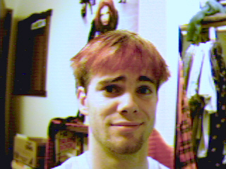

Jörg Besson
what is your position in the band?
I do the majority of the Synth work, taking songs we're working with and recreating them as we see fit. My job is really to make sure that all the elements that Colossus and Franka provide fit together the right way.
what are your biggest musical influences?
I don't know if I could pin it down to just one band. My influences range from Jazz to Hip Hop to Industrial. I try my hardest to sample the range of musical talent out there.
what's the one thing all your fans should know about you?
I have a tattoo of Rick Wallace's face on my ass.